Hardware · Fall 2022 · v1 built and tested; v2 designed
Rucksack CNC mill
A small Cartesian milling machine with a 2.5-inch working cube, light enough to carry.

- 2.5 inworking cube, each side
- 10 minallowed to disassemble and rebuild
- 3 DoFone stepper added to the earlier 2-axis machine
- 1friction problem found and fixed with extrusion guides
A prototype CNC mill I designed, built and programmed for ME360: at least 2.5 degrees of freedom, a working volume of 2.5 by 2.5 by 2.5 inches, and small and light enough to fit in a rucksack, or to be taken apart and rebuilt in ten minutes.
What changed
| v1 (built) | v2 (design) | Why | |
|---|---|---|---|
| Working volume | Brief asked for 2.5 × 2.5 × 2.5 in; the CAD allows about 178 × 106 × 62 mm | 160 × 120 × 50 mm | v1 travel is read from the CAD, not measured |
| Motion | Belts on X and Y, sliders on extrusion, belt-driven Z | Closed-loop steppers on preloaded ball screws | About $112 against $714 for brushless axes, with neither limited by torque |
| Portability | Rucksack, rebuilt in 10 minutes | About 9 kg, 10.5 kg with supplies | Over a strict 7 kg carry-on limit |
Conclusion
Version 1 milled and fitted the brief, and its main lesson was to let the extrusion be the guide. Version 2 is unbuilt, costed at about $976 with about $584 seen on supplier listings. Its stiffness and cutting numbers are hand estimates, so they are targets to test, not results, and I dropped the stiffness comparison with version 1 until there is a proper model of it.
01The brief and the constraints
Prototype a machine with at least 2.5 degrees of freedom and a 2.5-inch working cube. It had to be light and small enough for a rucksack, or larger if it could come apart and go back together in ten minutes. The course supplied the same control board as the earlier two-axis drawer project, plus 8020 aluminium extrusions, pulleys and belts. The constraints did more of the designing than I expected.
02Why a mill
I had workshop experience and wanted a machine with a real use, not a toy. The earlier project already moved in two axes, so adding a stepper motor on the end effector to control Z took it to three, which was feasible in the time and within what I could build.
03Design
A rough sketch settled the frame, the sliders and what needed research before CAD. The frame is a plain rectangle of extrusion, with the pre-drilled holes tapped so two bars screw together at 90 degrees. Sliders on the sides carry the two extrusions that form the second axis, and belt slots let the tension be adjusted again and again. The Y slider houses a NEMA 17 motor that drives Z: a belt turns a gear on a screw, and the screw's rotation becomes the straight motion of the spindle holder. The holder has two teeth for smooth gliding and is balanced to keep the moment from the spindle's weight small.

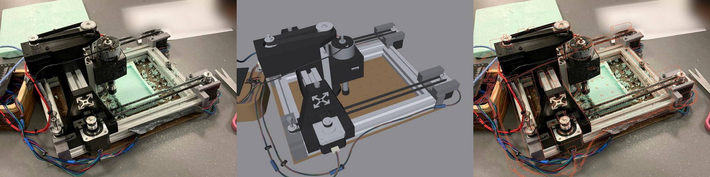

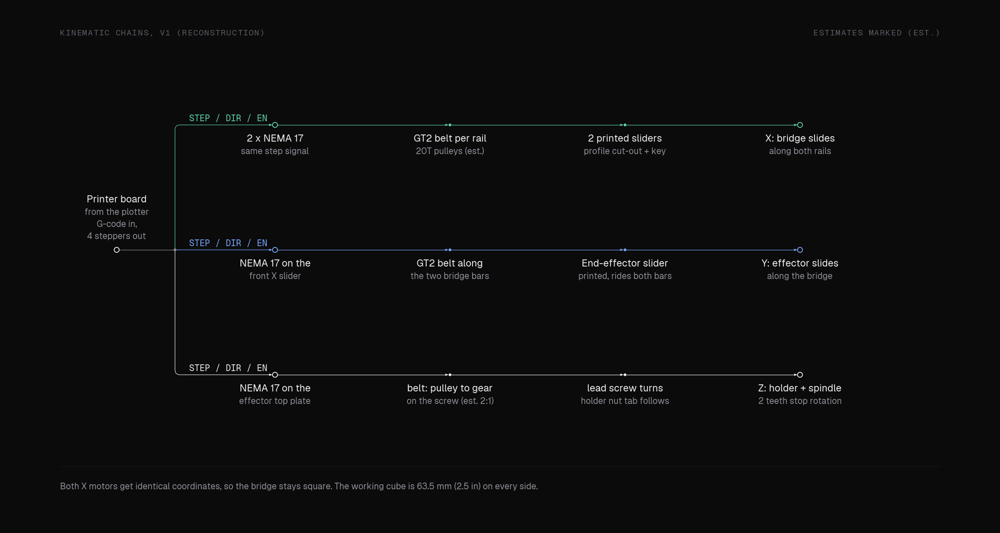

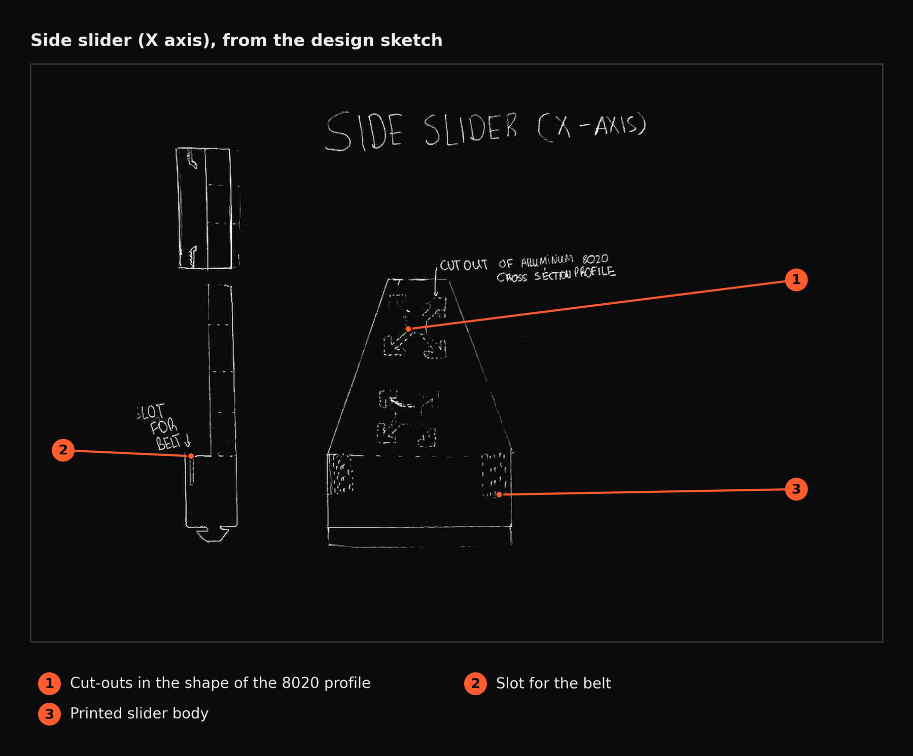

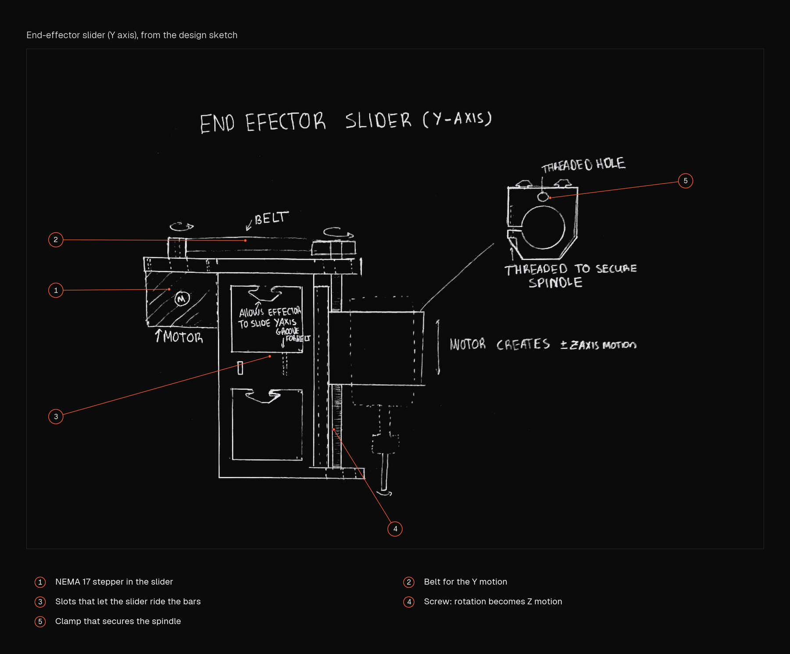

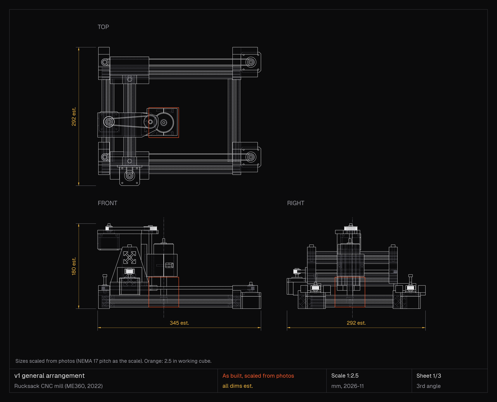

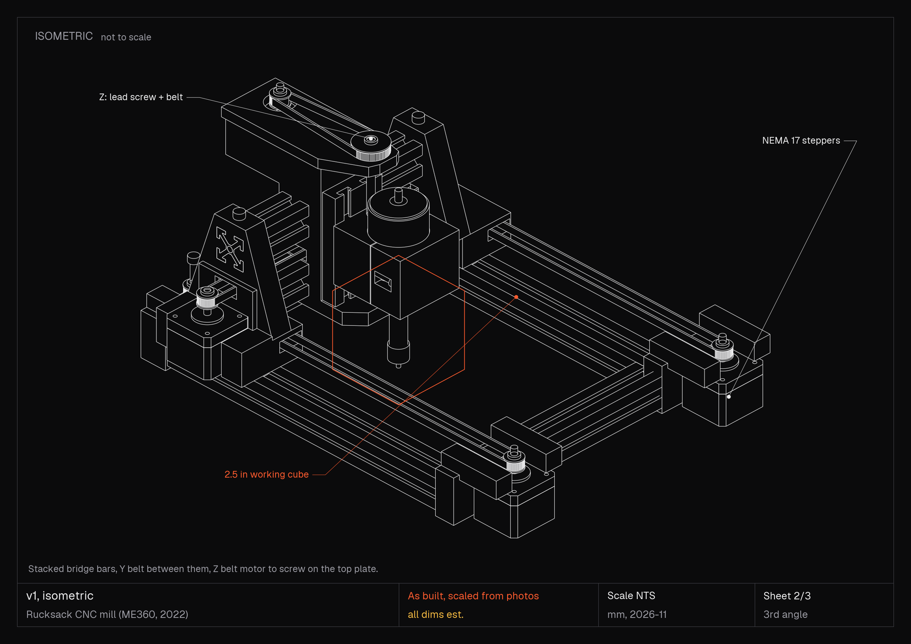

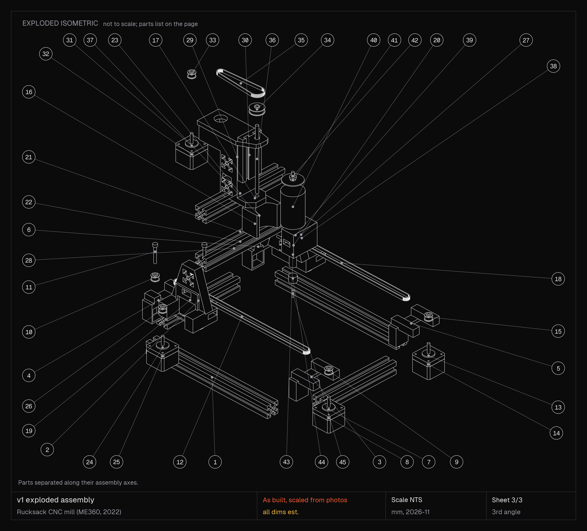
Parts list (45 items)
| No. | Part | Qty | Material | Note |
|---|---|---|---|---|
| 1 | X rail (1 in 8020, 292 mm) | 2 | 6063-T5 aluminium | size est.; project text (8020); length scaled from 2022 photos (solved cameras, NEMA 17 scale) |
| 2 | Cross member (1 in 8020, 175.4 mm) | 2 | 6063-T5 aluminium | size est.; frame-test photo; length scaled from 2022 photos (solved cameras, NEMA 17 scale) |
| 3 | End block + motor mount, +X front (printed) | 1 | PLA (printed on a Prusa) | size est.; scaled from 2022 photos (solved cameras, NEMA 17 scale) |
| 4 | End block + idler post, -X front (printed) | 1 | PLA (printed on a Prusa) | size est.; scaled from 2022 photos (solved cameras, NEMA 17 scale) |
| 5 | End block + motor mount, +X rear (printed) | 1 | PLA (printed on a Prusa) | size est.; scaled from 2022 photos (solved cameras, NEMA 17 scale) |
| 6 | End block + idler post, -X rear (printed) | 1 | PLA (printed on a Prusa) | size est.; scaled from 2022 photos (solved cameras, NEMA 17 scale) |
| 7 | Stepper end bell + shaft, X (f) | 1 | aluminium/steel | datasheet / standard; NEMA 17 standard |
| 8 | NEMA 17 stepper, X (front) | 1 | steel/copper | size est.; project text; position scaled from 2022 photos (solved cameras, NEMA 17 scale); length est. |
| 9 | GT2 20T drive pulley, X (f) | 1 | aluminium | size est.; photos: flanged aluminium pulley with hub; teeth est. |
| 10 | Idler collar, X (f) | 1 | aluminium | size est.; photos: flanged collar with grub screw on the long bolt |
| 11 | Long M5 cap screw, idler post (f) | 1 | steel | size est.; photos |
| 12 | GT2 6 mm belt, X (f) | 1 | rubber/glass cord | size est.; photos: two black toothed strands along each side; clamp slots in the slider base |
| 13 | Stepper end bell + shaft, X (r) | 1 | aluminium/steel | datasheet / standard; NEMA 17 standard |
| 14 | NEMA 17 stepper, X (rear) | 1 | steel/copper | size est.; project text; position scaled from 2022 photos (solved cameras, NEMA 17 scale); length est. |
| 15 | GT2 20T drive pulley, X (r) | 1 | aluminium | size est.; photos: flanged aluminium pulley with hub; teeth est. |
| 16 | Idler collar, X (r) | 1 | aluminium | size est.; photos: flanged collar with grub screw on the long bolt |
| 17 | Long M5 cap screw, idler post (r) | 1 | steel | size est.; photos |
| 18 | GT2 6 mm belt, X (r) | 1 | rubber/glass cord | size est.; photos: two black toothed strands along each side; clamp slots in the slider base |
| 19 | X slider, front: tower + Y motor mount (printed) | 1 | PLA (printed on a Prusa) | size est.; cnc_x_slider sketch and photos; sizes scaled from 2022 photos (solved cameras, NEMA 17 scale) |
| 20 | X slider, rear: tower with the Y idler (printed) | 1 | PLA (printed on a Prusa) | size est.; cnc_x_slider sketch and photos; sizes scaled from 2022 photos (solved cameras, NEMA 17 scale) |
| 21 | M5 cap screws into the bar ends' slots | 2 | steel | size est.; frame-test and top photos |
| 22 | Bridge bar, lower (1 in 8020, 190.5 mm) | 1 | 6063-T5 aluminium | size est.; both sketches, frame-test photo, clip; length scaled from 2022 photos (solved cameras, NEMA 17 scale) |
| 23 | Bridge bar, upper (1 in 8020, 190.5 mm) | 1 | 6063-T5 aluminium | size est.; both sketches, frame-test photo, clip; length scaled from 2022 photos (solved cameras, NEMA 17 scale) |
| 24 | Stepper end bell + shaft, Y | 1 | aluminium/steel | datasheet / standard; NEMA 17 standard |
| 25 | NEMA 17 stepper, Y (on the front slider) | 1 | steel/copper | size est.; first sketch + photos; position scaled from 2022 photos (solved cameras, NEMA 17 scale) |
| 26 | GT2 20T drive pulley, Y | 1 | aluminium | size est.; photos; teeth est. |
| 27 | Y idler | 1 | aluminium | size est.; not visible in any photo (est.) |
| 28 | GT2 6 mm belt, Y (between the bars) | 1 | rubber/glass cord | size est.; first sketch, end-effector sketch 'groove for belt', clip shows the toothed belt between the bars |
| 29 | End effector: body, foot and top plate (printed) | 1 | PLA (printed on a Prusa) | size est.; cnc_y_slider sketch and photos; sizes scaled from 2022 photos (solved cameras, NEMA 17 scale) |
| 30 | Z guide column (slotted extrusion, about 12 x 45) | 1 | 6063-T5 aluminium | size est.; photos: thin wide column, end shows lips and hollow triangles; two teeth in the end-effector sketch; section read from the front photo and clip |
| 31 | Stepper end bell + shaft, Z | 1 | aluminium/steel | datasheet / standard; NEMA 17 standard |
| 32 | NEMA 17 stepper, Z (the added third axis) | 1 | steel/copper | size est.; cnc_y_slider sketch 'motor'; photos show it inside the black housing |
| 33 | GT2 20T motor pulley, Z | 1 | aluminium | size est.; photo: flanged pulley with hub |
| 34 | GT2 40T pulley on the screw | 1 | aluminium | size est.; close-up: pulley about 26 mm pitch diameter by photo solve, threaded bore visible; tooth count est. |
| 35 | GT2 belt, Z drive | 1 | rubber/glass cord | size est.; photos |
| 36 | Z lead screw (threaded rod, M6) | 1 | steel | size est.; photos: threaded rod between column and spindle; rotation becomes Z motion (sketch) |
| 37 | Spindle holder, back half with the two teeth (printed) | 1 | PLA (printed on a Prusa) | size est.; cnc_y_slider sketch and photos; sizes scaled from 2022 photos (solved cameras, NEMA 17 scale) |
| 38 | Spindle clamp cap (printed) | 1 | PLA (printed on a Prusa) | size est.; photos: seam on the spindle axis, screw in a pocket |
| 39 | M4 clamp screws | 2 | steel | size est.; photos, sketch 'threaded to secure spindle' |
| 40 | Spindle: 775-class brushed DC motor | 1 | steel | size est.; photos: can with slots near the top; diameter 40 +- 3 by photo solve |
| 41 | Motor terminal disc (M+ / M-) | 1 | FR4 | size est.; close-up photo |
| 42 | Motor shaft, rear end | 1 | steel | size est.; photos |
| 43 | Collet shank | 1 | steel | size est.; photos, clip |
| 44 | Collet nut | 1 | steel | size est.; photos, clip |
| 45 | End mill, 3 mm | 1 | carbide/steel | size est.; clip: thin cutter |
04The friction problem
Moments and friction were the main worry, since they decide how smoothly and accurately a mill cuts. The first idea, printing the slots in plastic, created too much friction to mill precisely. The fix was to let the aluminium extrusion itself be the guide. Sliders were printed on a Prusa, which held tight tolerances well, a couple were filed for a smoother inside finish, and the identical Y sliders were designed to be interchangeable.

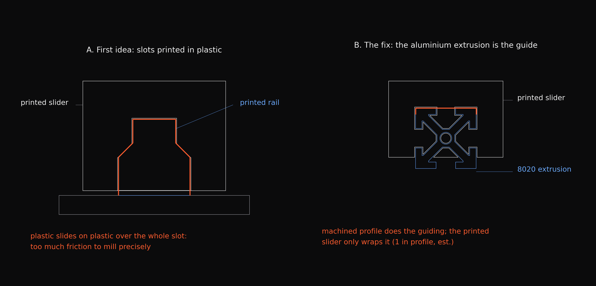
05Result
After assembly the machine was tested and worked, and a video shows it face milling.

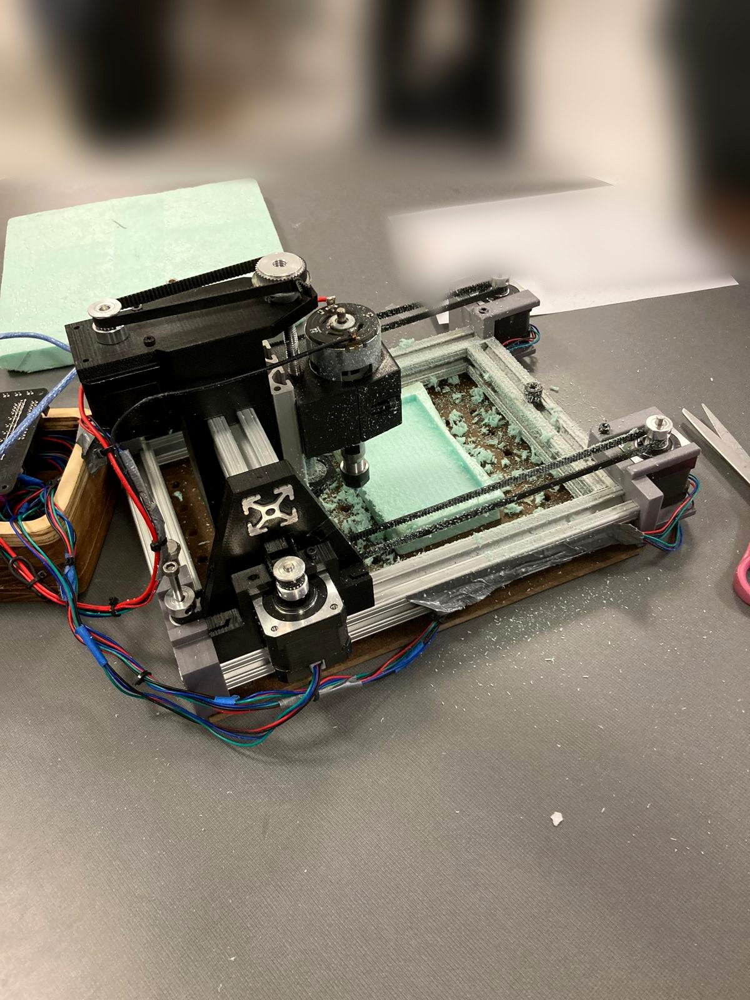

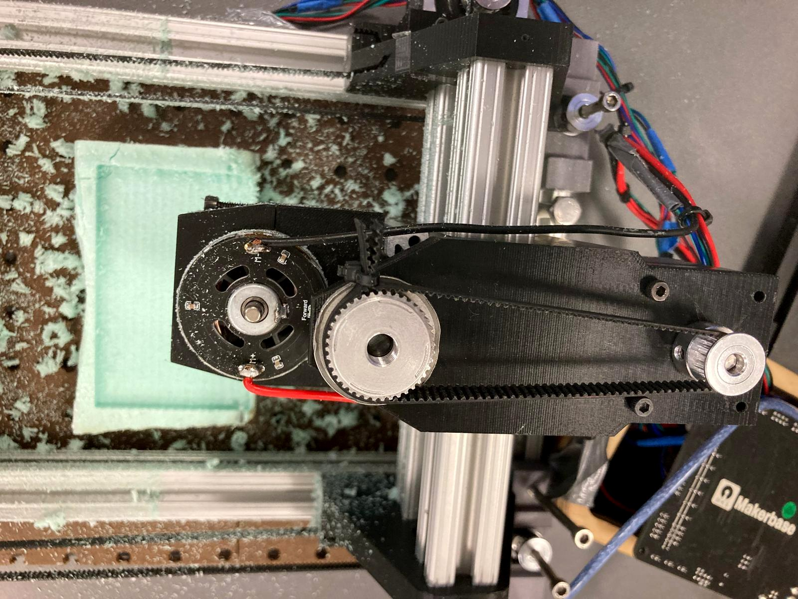

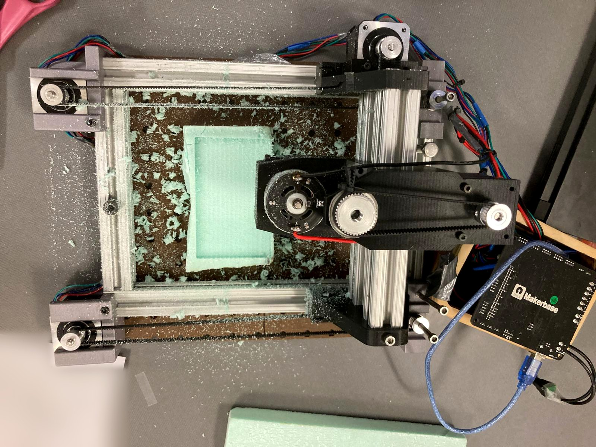

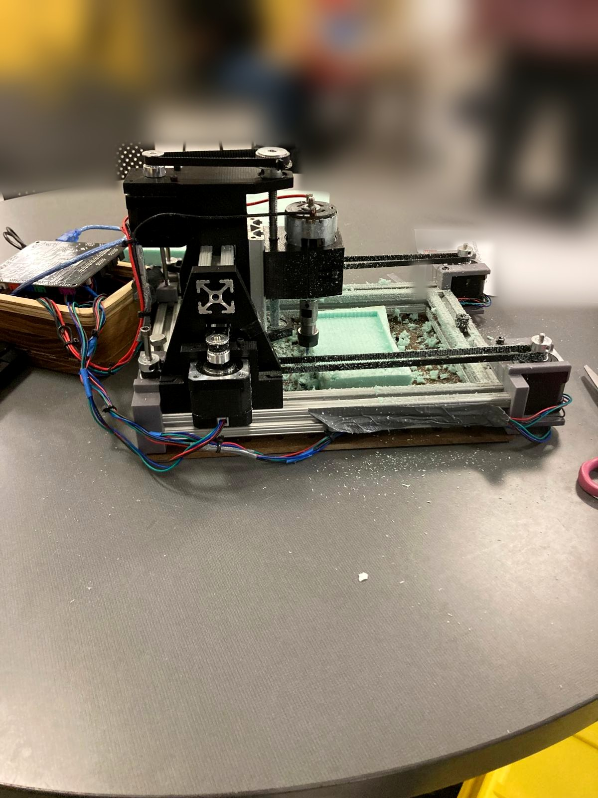

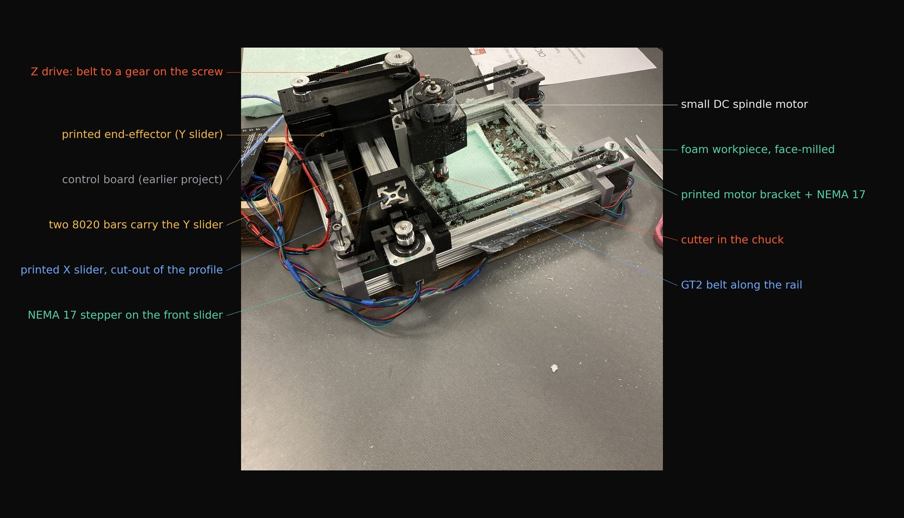
06Version 2: closed-loop axes, brushless spindle
Version 2 is a design, unbuilt, aimed at a stiffer carry-in mill with a 160 × 120 × 50 mm tool volume and a 100 N design cutting load. It keeps the portable extrusion frame but moves to closed-loop drives on preloaded ball screws and a 400 W brushless spindle in an ER11 collet. Brushless motors on the axes were considered seriously: servo-class axes with an ODrive-style controller cost about $714 for three axes against about $112 for closed-loop NEMA 17 steppers, and at roughly 0.1 N·m of screw torque neither option is limited by torque or speed, so the design takes the closed-loop steppers and spends the budget on the brushless spindle. If you want true brushless axes the motor mounts change and the electrical architecture stays the same.
The numbers are hand estimates and say so. Frame stiffness comes out near 1.5 N/µm, from beam equations with ideal members and assumed torsion and carriage stiffness. I removed the comparison with version 1: it used towers that turned out to be wrong, and the same method on the real towers ignores the printed slider joint, column and overhang, so its answer is not believable. A proper version 1 model is still to do. The cutting force for a 6 mm two-flute tool is estimated with a chip-load model whose constants are good to a factor of two. The machine weighs about 9 kg, 10.5 kg with the power supplies: rucksack-sized, but over a strict 7 kg carry-on limit. The total is about $976, of which about $584 was seen on supplier listings; the rest is estimated. Both CAD models are reconstructions, since the original files are on another computer, with estimated dimensions flagged on every sheet.

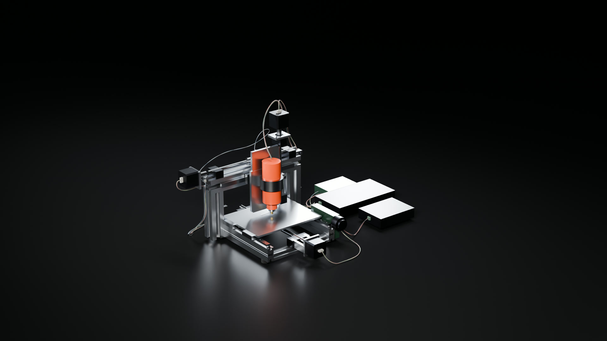

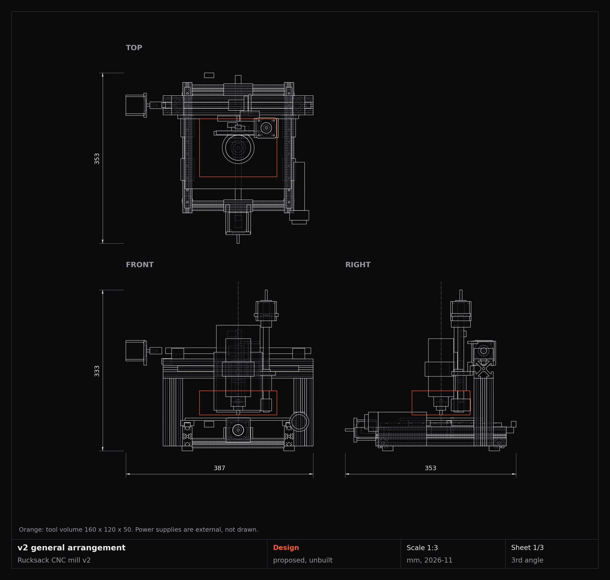

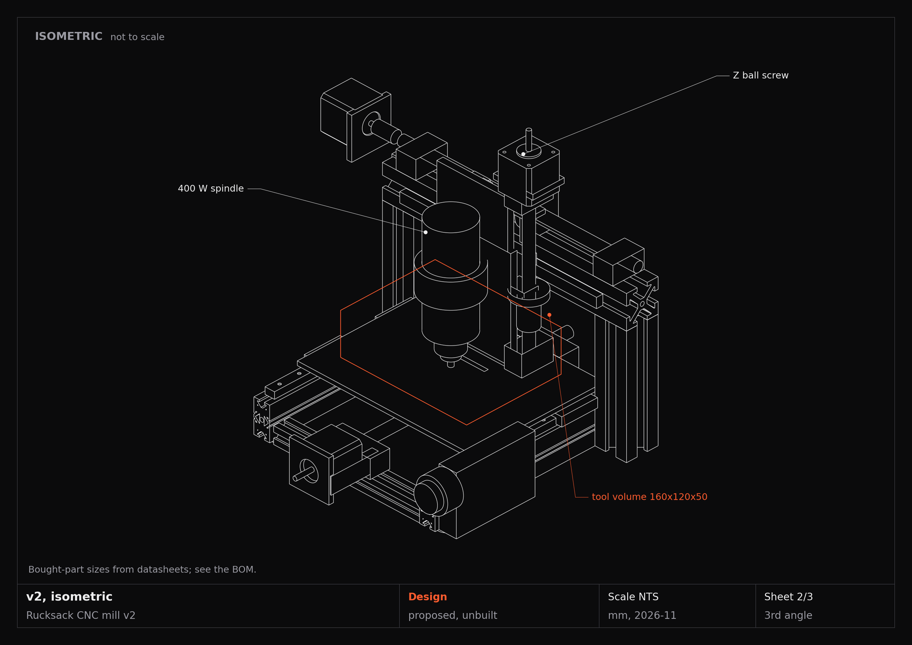

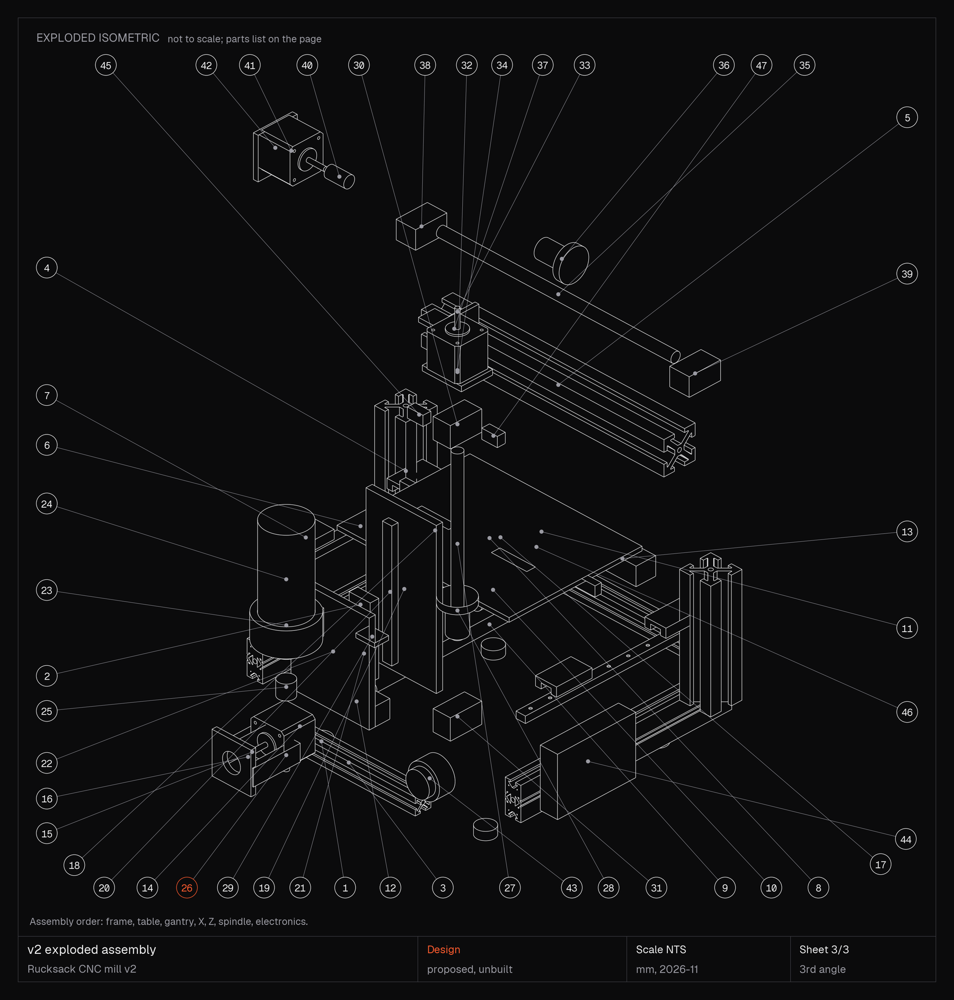
Parts list (47 items)
| No. | Part | Qty | Material | Note |
|---|---|---|---|---|
| 1 | Rubber foot | 4 | rubber | size est.; design (this work) |
| 2 | Side member (2040, 270) | 2 | 6063-T5 aluminium | datasheet / standard; Misumi HFS5-2040 |
| 3 | Cross member (2020) | 2 | 6063-T5 aluminium | datasheet / standard; Misumi HFS5-2020 class |
| 4 | Gantry column (4040) | 2 | 6063-T5 aluminium | datasheet / standard; Misumi HFS5-4040 |
| 5 | Gantry beam (4040) | 1 | 6063-T5 aluminium | datasheet / standard; Misumi HFS5-4040 |
| 6 | Table rail (MGNR12, 250) | 2 | stainless/steel | datasheet / standard; Hiwin MGN12 |
| 7 | MGN12H carriage (Y) | 4 | steel | datasheet / standard; Hiwin MGN12H |
| 8 | Table plate (6061, 220 x 170 x 5) | 1 | 6061-T6 | datasheet / standard; design (this work) |
| 9 | Y ball screw SFU1204 (300) | 1 | steel | datasheet / standard; SFU1204 (generic, see BOM) |
| 10 | Y ball nut (SFU1204) | 1 | steel | datasheet / standard; SFU1204 |
| 11 | Y nut bracket | 1 | 6061 | size est.; design (this work) |
| 12 | BK10 fixed support (Y) | 1 | steel | size est.; BK10 (generic) |
| 13 | BF10 floating support (Y) | 1 | steel | size est.; BF10 (generic) |
| 14 | Coupler 5-8 mm (Y) | 1 | aluminium | datasheet / standard; generic D14L25 |
| 15 | Closed-loop NEMA (Y) | 1 | steel/copper | datasheet / standard; MKS SERVO42D |
| 16 | Y motor bracket | 1 | 6061 | size est.; design (this work) |
| 17 | X rail (MGNR12, 250) | 1 | stainless/steel | datasheet / standard; Hiwin MGN12 |
| 18 | MGN12H carriage (X) | 2 | steel | datasheet / standard; Hiwin MGN12H |
| 19 | Z plate / X carriage (6061, 8 mm) | 1 | 6061 | size est.; design (this work) |
| 20 | Z rail (MGNR12, 150) | 1 | stainless/steel | datasheet / standard; Hiwin MGN12 |
| 21 | MGN12H carriage (Z) | 2 | steel | datasheet / standard; Hiwin MGN12H |
| 22 | Spindle holder plate (6061, 8 mm) | 1 | 6061 | size est.; design (this work) |
| 23 | Spindle clamp (52 mm bore) | 1 | 6061 | size est.; design (this work) |
| 24 | Spindle 400 W brushless (52 mm) | 1 | aluminium/steel | size est.; 400 W ER11 spindle kit (see BOM) |
| 25 | ER11 collet nut | 1 | steel | datasheet / standard; ER11 standard |
| 26 | Cutter 6 mm (carbide, 2 flute) | 1 | carbide | size est.; generic |
| 27 | Z ball screw SFU1204 (200) | 1 | steel | datasheet / standard; SFU1204 |
| 28 | Z ball nut | 1 | steel | datasheet / standard; SFU1204 |
| 29 | Z nut bracket | 1 | 6061 | size est.; design (this work) |
| 30 | BK10 fixed support (Z, top) | 1 | steel | size est.; BK10 |
| 31 | BF10 floating support (Z, bottom) | 1 | steel | size est.; BF10 |
| 32 | Coupler 5-8 mm (Z) | 1 | aluminium | datasheet / standard; generic |
| 33 | Closed-loop NEMA (Z) | 1 | steel/copper | datasheet / standard; MKS SERVO42D |
| 34 | Z motor bracket | 1 | 6061 | size est.; design (this work) |
| 35 | X ball screw SFU1204 (300) | 1 | steel | datasheet / standard; SFU1204 |
| 36 | X ball nut | 1 | steel | datasheet / standard; SFU1204 |
| 37 | X nut bracket | 1 | 6061 | size est.; design (this work) |
| 38 | BK10 fixed support (X) | 1 | steel | size est.; BK10 |
| 39 | BF10 floating support (X) | 1 | steel | size est.; BF10 |
| 40 | Coupler 5-8 mm (X) | 1 | aluminium | datasheet / standard; generic |
| 41 | Closed-loop NEMA (X) | 1 | steel/copper | datasheet / standard; MKS SERVO42D |
| 42 | X motor bracket | 1 | 6061 | size est.; design (this work) |
| 43 | E-stop button (22 mm) | 1 | plastic | size est.; generic 22 mm NC |
| 44 | ESP32 / FluidNC controller | 1 | PCB | size est.; see BOM |
| 45 | Limit/home switch X | 1 | plastic | size est.; generic KW12-3 |
| 46 | Limit/home switch Y | 1 | plastic | size est.; generic KW12-3 |
| 47 | Limit/home switch Z | 1 | plastic | size est.; generic KW12-3 |

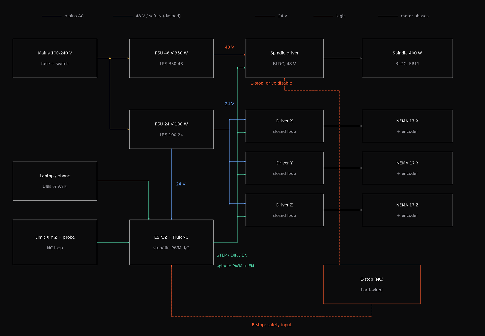

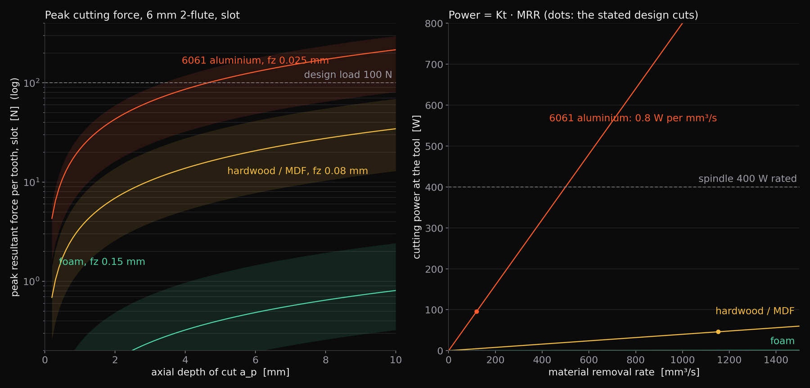